Stjerner
Astronomi C & Fysik B
Jacob Debel
Introduktion
Hvad ved I allerede?
- Størrelsesklasser: Visuel og absolut \(M = m - 5 \cdot \log \left( \frac{r}{10 pc} \right)\)
- Planckkurver
- Spektre og spektralanalyse
- Spektralklasser: O B A F G K M
- Luminositet: \(L = 4 \pi R^2 \cdot \sigma T^4\)
- \(\frac{L_A}{L_B} = \left( \frac{R_A}{R_B} \right)^2 \cdot \left( \frac{T_A}{T_B} \right)^4\)
En introducerende video
Linket er: https://youtu.be/ld75W1dz-h0?list=PL8dPuuaLjXtPAJr1ysd5yGIyiSFuh0mIL
Stjerneevolution
De fire stadier
| Evolutionsfase | Energikilde |
|---|---|
| Stjernedannelse | Gravitationsenergi |
| Hovedseriefasen | Fusion af brint til helium |
| Kæmpestjernefasen | Fusion af helium til tungere grundstoffer op til jern |
| Stjernedød | Gravitationsenergi/termisk energi |
Stjerneudvikling for lette stjerner
En lille videoforsmag.
Linket er: https://youtu.be/jfvMtCHv1q4?list=PL8dPuuaLjXtPAJr1ysd5yGIyiSFuh0mIL
Stjernedannelse
Gravitationsenergi
Ørnetågen (M16)
Pillars of creation
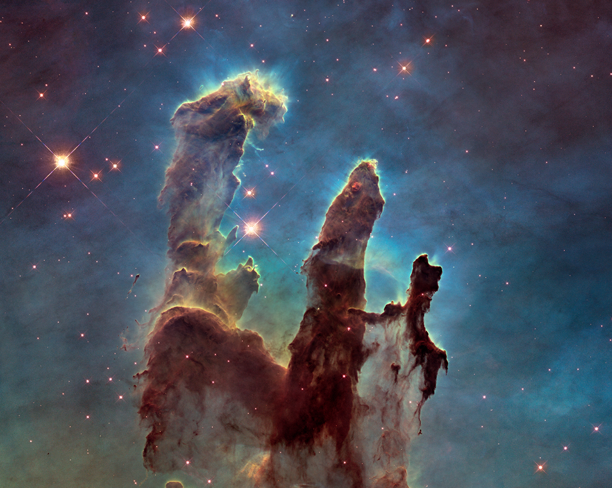
Den venstre søjle er ca. 4 ly høj.
Oriontågen (M42)

ca 24 ly bred og ca 2000 \(M_\odot\)
Sammentrækning af en gassky
- Store (som i virkelig store) gasskyer af brint, helium (og meget små mængder af molekyler) trækker sig sammen pga tyngdekraften.
Linket er: https://youtu.be/Qk0ff_zREMI
- Når en stor kold gassky trækker sig sammen stiger temperaturen.
- Temperaturen stiger hurtigt fra nogle få grader over det absolutte nulpunkt til flere tusinde grader.
- Temperaturstigningen vil bremse sammentrækningen.
- Kun brint (og helium) ingen yderligere sammentrækning
- og dermed ingen stjernedannelse
- pga hydrostatisk ligevægt

Molekyler i gasskyen
- Gasskyen trækker sig sammen.
- De store molekyler støder sammen, optager energi, bliver varme og begynder at vibrere.
- Udsender stråling i IR og \(\mu\) m-området.
- Gasskyen slipper derfor af med noget af varmen, og kan trække sig yderligere sammen.
- Centrum kan nu blive meget varm, og fusionsprocesser kan nu opstå i kernen.
- Nu er stjernen født!
Hvor kommer energien fra?
Kan forklares med virialteoremet.
\[\boxed{2 \cdot \left\langle E_\text{kin} \right\rangle + \left\langle E_\text{pot} \right\rangle = 0\,.}\]
\(\left\langle E_\text{pot} \right\rangle\) er ikke den traditionelle potentielle energi mellem to legemer, men en egenenergi et legeme (en gassky i dette tilfælde) har blot i kraft af sin egen masse.
For en uendeligt stor sky, som har trukket sig sammen til en kugle med radius \(R\) er den potentielle egenenergi givet ved \[\left\langle E_\text{pot} \right\rangle = - \frac{3}{5}\cdot \frac{G M^2}{R}\]
Halvdelen af energien går til opvarmning af skyen, mens den anden halvdel forlader skyen som strålingsenergi.
Solens alder pba. gravitation alene
Beregn Solens anslåede alder, hvis frigivet potentiel energi alene skal drive energiproduktionen. Brug formlerne
\[E_\text{stråling} = \frac{3}{10}\cdot \frac{G M^2}{R}\]
og
\[t = \frac{E_\text{stråling}}{L_\odot} = \frac{\frac{3}{10}\cdot \frac{G M^2}{R}}{L_\odot}=?\]
Se en nærmere forklaring i dokumentet om virialteoremet.
Opgave 8

Se side 39 i kompendiet om stjerner.
Hovedseriefasen
Fusion af brint til helium.
NGC 604

Fusion af brint til helium
Linket er: https://youtu.be/qj-LePbYzSY
- Fusion af brint til helium (pp-proces).
- Kan begynde, når kernetemperaturen er over ca. \(10\cdot 10^6\) K.
- fase: En af protonerne omdannes til en neutron vha den svage kernekraft. Det tager laang tid!
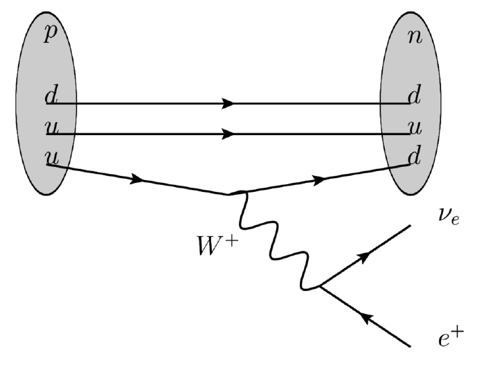
- fase: Deuteriumkernen sættes sammen med en proton og danner Helium-3.
- Foregår via den stærke kernekraft. Det går lynende hurtigt ift fase 1.
- fase: To Helium-3-kerner smelter sammen, men den elektriske frastødning sender to protoner ud igen.
Overblik
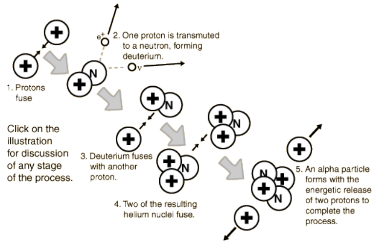
Overblik

Opgave - Solens energiproduktion
Se dokumentet Opgave_Solens_energiproduktion.pdf

Ny hydrostatisk ligevægt
- Gastryk og strålingstryk for fusionsprocesserne balancerer tyngdekraften.
- Meget stabilt.
- Mindre fusion -> sammentrækning -> højere temp -> mere fusion.
- Mere fusion -> gasskyen ekspanderer -> lavere temp -> mindre fusion.
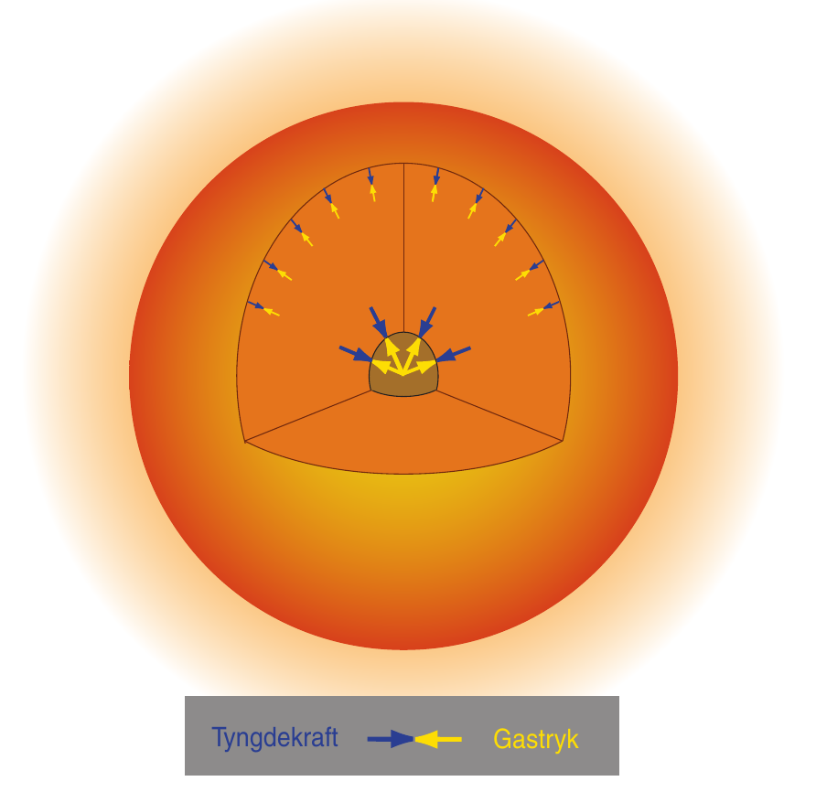
Solens opbygning

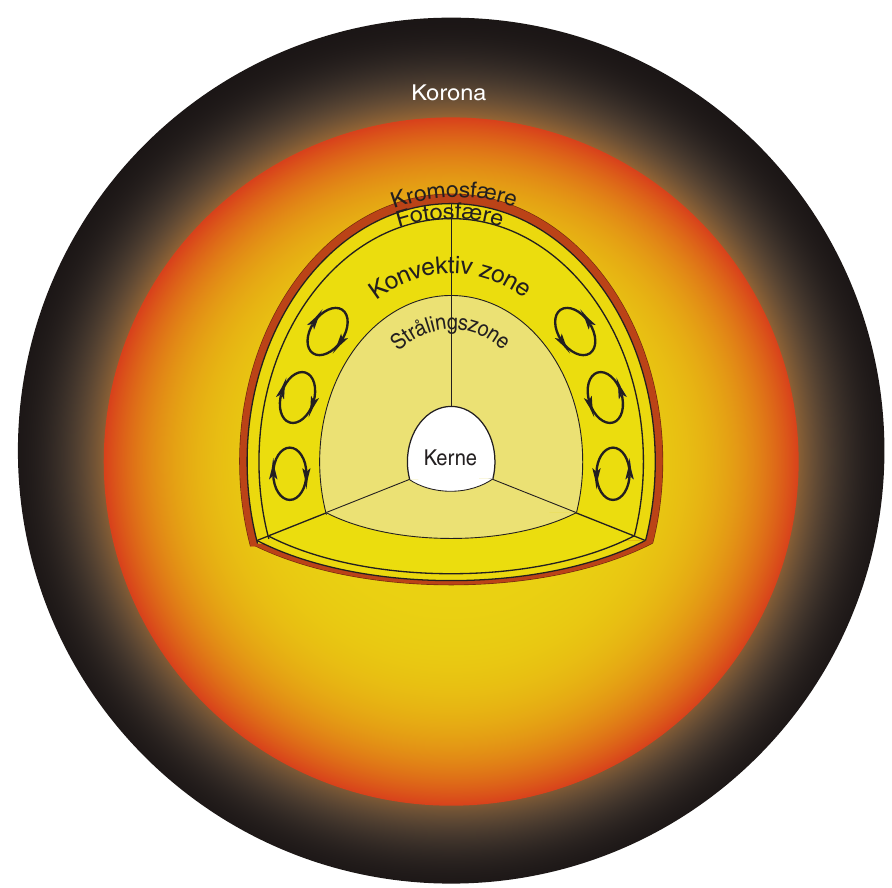
Solen svulmer op
- Brint omdannes til helium.
- kernens densitet forøges.
- Kernen trækker sig dermed sammen.
- Temperaturen stiger.
- De ydre lag bliver varmere og udvider sig.
- De varmere ydre lag udsender mere stråling.
- Luminositeten stiger altså løbende pga større overflade og højere temp.
- For nuværende er Solens luminositet vokset med ca. 40 %.
CNO-cyklussen
- For større og (dermed) varmere stjerner, findes der andre fusionsprocesser også.
- En af dem er CNO-cyklussen.
- Starter ved ca. \(15 \cdot 10^6\) K.
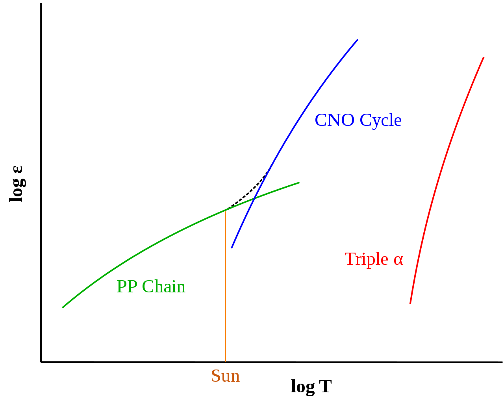

Levetid på hovedserien
Levetiden for en stjerne på hovedserien kan beregnes vha. formlen.
\[\boxed{t = t_\odot \cdot \frac{\frac{M}{M_\odot}}{\frac{L}{L_\odot}} = t_{\odot}\cdot \frac{M}{M_{\odot}}\cdot \frac{L_{\odot}}{L}}\]
Opgave om levetider
- Beregn levetiderne på hovedserien for følgende stjerner (Find selv oplysninger):
- Sirius A
- BI 253
- 61 Cygni A
- Sæt levetiderne for stjernerne i perspektiv ift. Universets og Jordens udviklingen.
Kæmpestjernefasen
Fusion til tungere grundstoffer
Betelgeuse
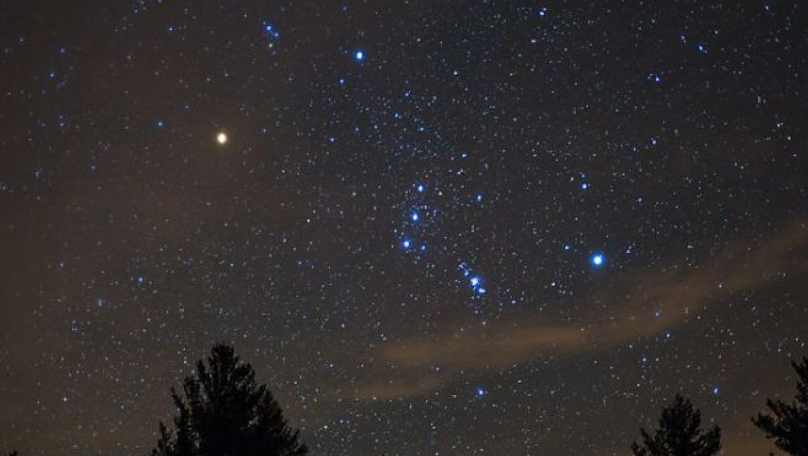
Fusion af helium til kulstof og tungere grundstoffer
- Begyndelsen på enden.
- Ikke nok brint tilbage.
- Gravitation overtager og kernen trækker sig sammen.
- Temperaturen stiger i kernen og på overfladen.
- Stjernen udvider sig meget.
- Fusion af tungere grundstoffer.
- Løgstruktur.
Triple \(\alpha\)-processen
- Berylium-8 er meget ustabil, og skal nå at fusionere med en heliumkerne/alfepartikel meget hurtigt.
- Der produceres en karbon-12-kerne, som er i en exciteret tilstand.
- Denne henfalder typisk tilbage til tre alfapartikler.
- Der er ca. \(\frac{1}{2421.3}\) chance for at karbon-12-kernen falder tilbage til grundstanden og udsender ståling (\(\gamma\)).
- Forløber ved ca \(10^8\) K (100 mio kelvin).
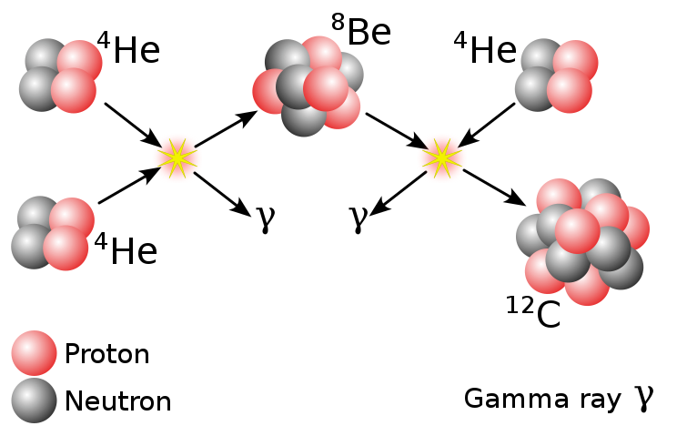
Løgstruktur for små stjerner (som Solen)
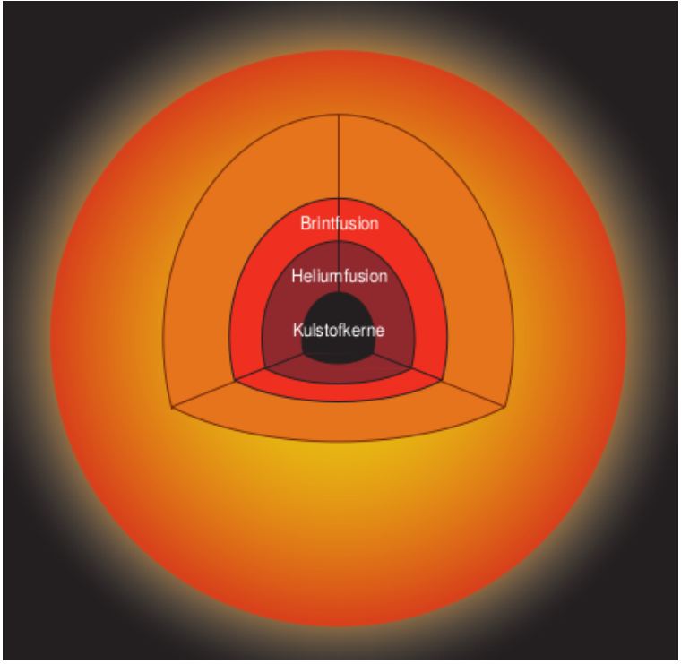
Løgstruktur for store stjerner
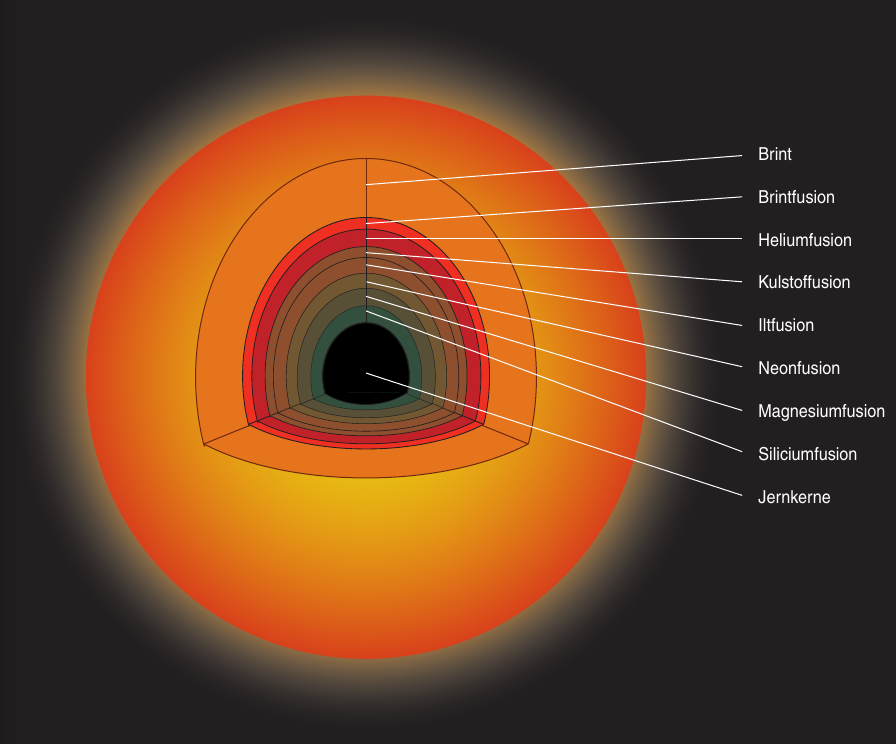
Hvorfor stopper det ved jern i kernen?
Bindingsenergi pr. nukleon

Opgave 9

Se side 39 i kompendiet om stjerner.
Stjernedød
Gravitationsenergi og termisk energi.
- Det hele afhænger af stjernens oprindelige størrelse.
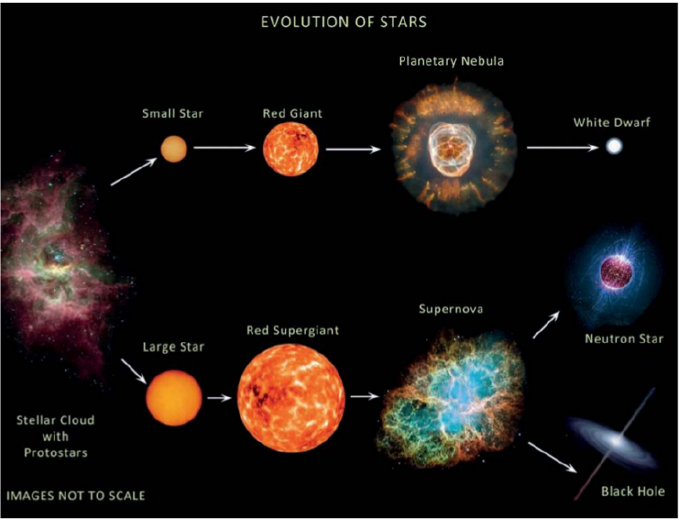
Linket er: https://youtu.be/yi4WHtG03BU
"Små" stjerners død
Linket er: https://youtu.be/Mj06h8BeeOA?list=PL8dPuuaLjXtPAJr1ysd5yGIyiSFuh0mIL
Sirius B
- Sirius B er et eksempel på en hvid dværg.
- Sirius A og B var oprindeligt et binært stjernesystem, hvor B var den største.
- Sirius B havde et evolutionsforløb som beskrevet for små stjerner.

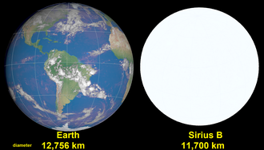
Hvide dværge
- Hvid dværge er de inaktive stjernerester, der er tilbage, når stjerner med \(M< 10 M_{\odot}\) dør.
- Når fusionsprocesserne ophører, ophører også det udadrettede strålingstryk, og der er kun gravitation tilbage.
- Hvad standser gravitationens sammentrækning, så der faktisk er en hvid dværg tilbage?
 Ringnebulaen.
Ringnebulaen.
Svaret er…
Elektron-degeneration
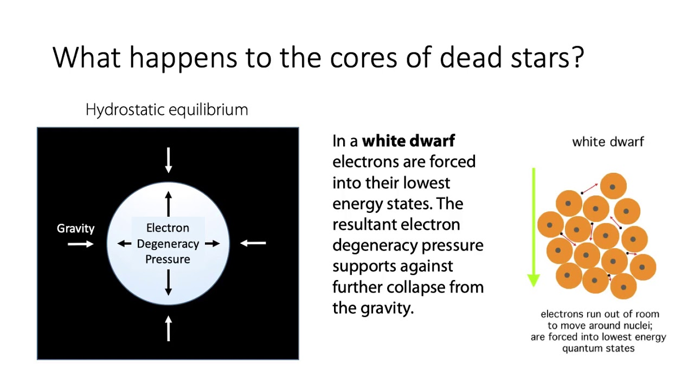
Beror på Paulis eksklusionsprincip fra kvantemekanikken.
Hvis \(M_\text{hvid dværg} > 1.44 M_\odot\) (Chandrasekhargrænsen) overstiger gravitationen dog elektrondegenerationstrykket.
Paulis eksklusionsprincip
- To eller flere identiske fermioner (her elektroner) med de samme kvantetal kan ikke være i samme kvantetilstand i kvantesystemet på samme tid.
- Eller to elektroner kan ikke have samme sæt af kvantetal.
- Derfor opstår orbitalerne og skallerne i atomerne.
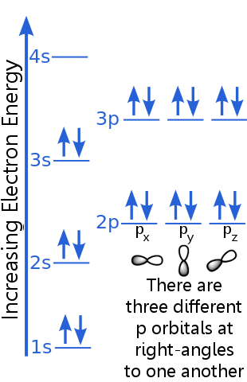
Se mere her: http://video.ku.dk/paulis-eksklusionsprincip
Fun fact: Jan Philip Solovej var min egen forelæser til mat 1 og lineær algebra på min tid på universitetet.
Store stjerners død
Linket er: https://youtu.be/PWx9DurgPn8?list=PL8dPuuaLjXtPAJr1ysd5yGIyiSFuh0mIL
Neutronstjerner
- De centrale dele efter en supernovaeksplosion for stjerner med \(10 M_\odot < M < 25 M_\odot\)
- Elektrondegenerationstrykket overvindes af gravitationen.
- Elektronerne bliver presset sammen med atomkernernes protoner, og danner neutroner via elektronindfangning.
- Neutronstjerner har radier i størrelsesordnen 10 km og masser lidt over \(1.4 M_{\odot}\).
- Hvad forhindre neutronstjerner i at kollapse?
- Neutrondegenerationstrykket bl.a. (igen Paulis eksklusionsprincip).
Elektronindfangning
Reaktion
\[p + e^- \to n + \nu_e\]
Eller på kvarkniveau
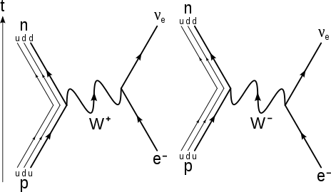
Kaldes undertiden også for omvendt beta-henfald.
Neutronstjerner
Linket er: https://youtu.be/RrMvUL8HFlM?list=PL8dPuuaLjXtPAJr1ysd5yGIyiSFuh0mIL
Lidt mere om neutronstjerner og pulsarer
Linket er: https://youtu.be/oLoLey75i2k
Sorte huller
- Opstår når massen af stjerneresten efter en supernovaeksplosion overstiger 2-3 \(M_{\odot}\)
- Intet kan nu balancere gravitationen, og stjerneresten imploderer på sig selv.
- Tyngdefeltet bliver så stort, at undvigelseshastigheden overstiger lysets hastighed i vakuum.
- Selv lys kan ikke undslippe!
- Størrelsen af et sort hul beskrives ofte vha dets Schwarzschildradius: \[R_s = \frac{2GM}{c^2}\]

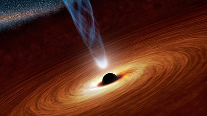
Opgave om sorte huller

Sorte huller
Linket er: https://youtu.be/qZWPBKULkdQ?list=PL8dPuuaLjXtPAJr1ysd5yGIyiSFuh0mIL
HR-diagrammet
Opbygning
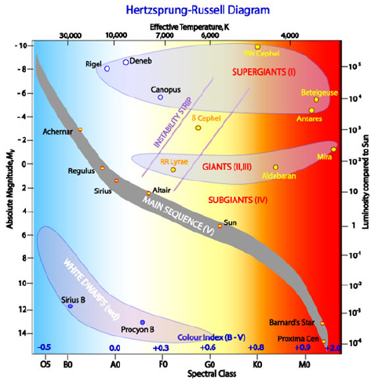
- Mange forskellige enheder på akserne
- "x"-aksen:
- Spektralklasser: OBAFGKM
- Farveindeks (Mere om det senere)
- Overfladetemperatur (stiger mod venstre!)
- "y"-aksen:
- Luminositet, enten i watt eller i enheder af Solluminositeter. Logaritmisk.
- Absolut størrelsesklasse (nogen gange også visuel, stiger nedad! Mere om det senere.)
Opgave 10
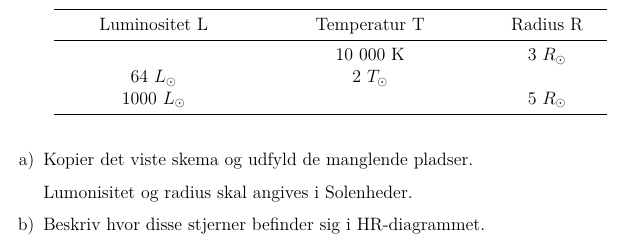
Se side 40 i kompendiet om stjerner.
Stjerneudvikling i HR
- Skitsér selv HR-diagram på et stykke papir.
- Hvad er det nu, der skal være på x- og y-aksen?
- Indtegn de fire stadier i en let stjernes udvikling
- Stjernedannelse
- Hovedseriefase
- Kæmpestjernefase
- Stjernedød
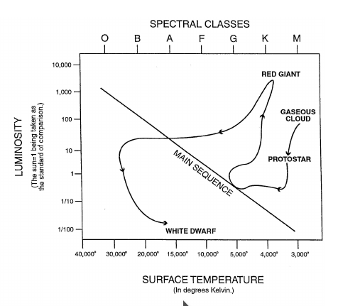


To stjernehobe
Plejaderne/Syvstjernen.
En åben hob.
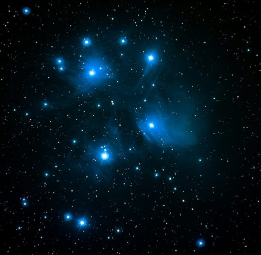
47 Tuc (NGC 104).
En kuglehob.
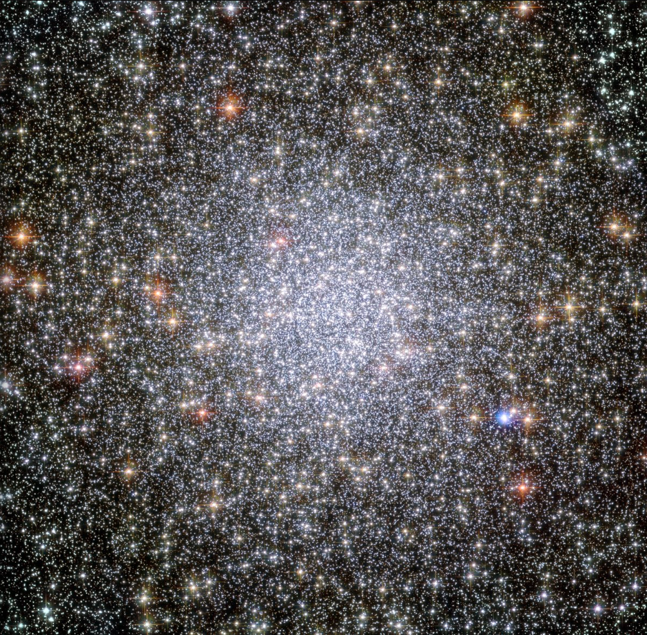
UBV-fotometri og farveindeks
Man sætter forskellige filtre foran teleskopet, som kun lukker udvalgte bølgelængder igennem.
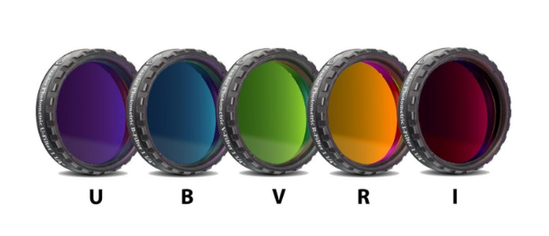
| Filter | Område | Effektiv bølgelængde [nm] | Båndbredde [nm] |
|---|---|---|---|
| U | Ultraviolet | 365 | 70 |
| B | Blåt | 440 | 100 |
| V | Visuelt | 550 | 90 |
| R | Rødt | 640 | 150 |
| I | Infrarødt | 790 | 150 |

Filtrenes navne står også for den tilsyneladende størrelsesklasse set igennen filtret. F.eks. \(B= m_B\).
- Ved at trække to størrelsesklasser med forskellige filtre fra hinanden, kan man skelne varme og kolde stjerner fra hinanden.
- Typisk anvender man farveindekset \(\left( B -V \right)\).

- Der er en klar sammenhæng mellem farveindekset (nogen gange bare kaldet farven) og temperaturen.

- Farveindekset \(B-V = 0\) er kalibreret til en temp på 10 000 K.
- Bl.a. efter stjernen Vega i Lyren.
- Lavt farveindeks (og sågar negativt) betyder varm stjerne.
- Højt farveindeks betyder kold stjerne.
| Stjerne | Farve | Temp [K] | B-V |
|---|---|---|---|
| Rigel | Blå | 20000 | -0.24 |
| Vega, Sirius | Hvide | 10000 | 0.00 |
| Canupus | Hvidgul | 7000 | 0.35 |
| Solen, Alfa Centauri | Gule | 6000 | 0.65 |
| Aldebaran | Rød | 4000 | 1.20 |
| Betelgeuse | Rød | 3000 | 1.70 |
Farve-størrelsesklassediagram
- Kaldes også et CMD (Color Magnitude Diagram på engelsk)
- Farveindekset (B-V) på x-aksen.
- Hvis man kender afstanden til en stjerne, så plotter man den absolutte størrelsesklasse inden for det visuelle filter langs y-aksen.
- Hvis man studerer stjernehobe kan man nøjes med at plotte V langs y-aksen.
- y-aksen vokser nedad!
- Det er meget nemmere at tage to billeder med to forskellige filtre end at finde spektrummerne for en masse stjerner i en stjernehob og måle/beregne deres individuelle luminositeter.
Nu er det jeres tur til at arbejde. :)